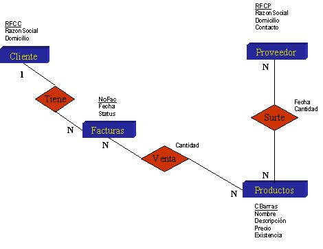

Ejercicio 4: Identificación de llaves en un Modelo ER
Modalidad
Trabajo por equipos.
Objetivos de aprendizaje
- Aplicando las reglas de traslado de MER a MR, define el Modelo Relacional para el siguiente Modelo Entidad Relación, posteriormente determinar las llaves primarias, foráneas y alternas que existen en cada relación, basándose en la lectura de "Conceptos básicos del modelo relacional".
Instrucciones
- La convención utilizada para identificar la llaves será la siguiente:
- Pk Llave Primaria
- Fk Llave Foránea
- Ak Llave Alterna

- Una vez identificadas las llaves, deben de dar una definición para los siguientes términos, si consideran necesario ejemplificar para lograr una mejor explicación, pueden hacerlo.
- Llave Primaria
- Llave Foránea
- Llave Alterna
Especificaciones de entrega
Un integrante del equipo deberá subir la solución vía Bitbucket o Github del equipo al ejercicio, indicando las matrículas y nombres de los miembros del equipo.